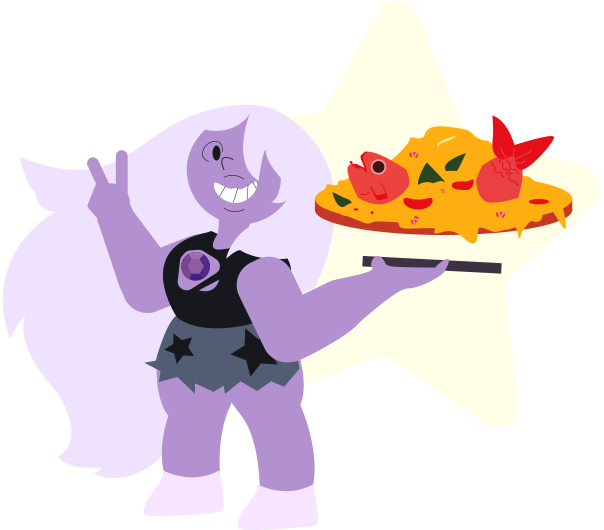

everything pizza
Ah yes the most adventerous one of all the crystal gems, Amethyst. She is known for her outlandish taste in food and ability to eat just about anything so this pizza is obvioulsy going to be her favorite. How could it not? It has everything...